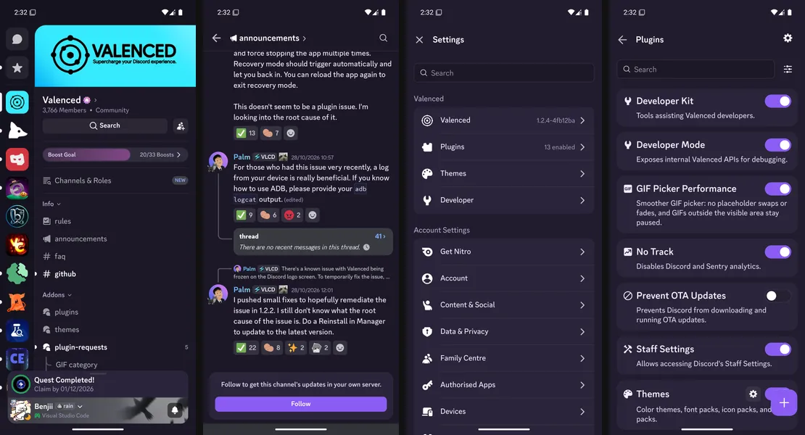

Loading the theme reference…
Loading the theme studio...
Tested keys
All keys
Every semantic key exported by this Discord build, with its default on each base. Tested keys link to a documented example. Unmarked keys have not been observed in our tests; they may depend on a particular screen, state or platform.
| Key | Your theme (Ash) | Ash | Dark | Light | Onyx | Raw (Ash) |
|---|
Templates
A starter theme called Dusk, in both formats. Same 25 colours either way.
STARTER / DUSK
A quieter shade of Discord.
Soft violet surfaces and a clear lavender accent. Explore the live preview, then make these 25 colours your own.
Start from DuskPreviewing this template leaves your saved theme untouched.
Loading Dusk preview…
View the original four-screen capture

JSON, for Legacy Themes
No code. Edit, upload, import by URL.
Plugin, js/index.ts
Goes in the plugin template's themes/ folder, next to manifest.json.